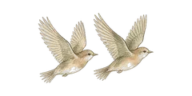

Recognised ADHD and autism questionnaires, in one calm place.
A starting point for anyone wondering about ADHD or autism, for adults and children.

Take me to the tests →What is ADHD? What is autism?Shared privately with family and invited people only; please don't share.